flowchart LR
D[Dataset] --> R[Resolución + anisotropía]
R --> M[Restricciones de memoria]
M --> C[Configuración 2D / 3D]
Clase 3 — Segmentación automática
En la clase anterior discutimos cómo evaluar una segmentación:
Hoy damos un paso atrás:
¿Cómo diseñamos el sistema de segmentación completo?
Y, sobre todo:
¿Qué rol queremos que tenga el modelo dentro del flujo clínico?
Al finalizar la clase deberían poder:
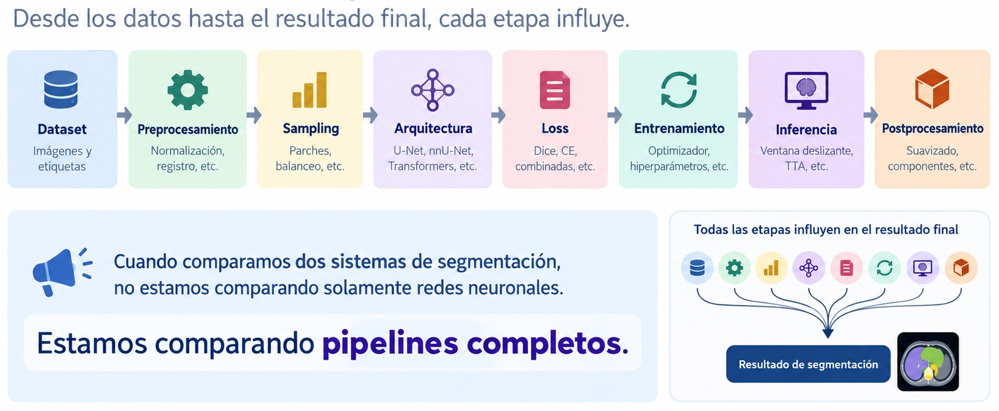
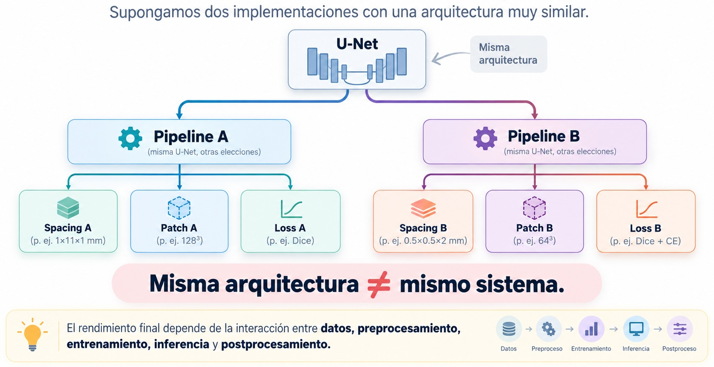
Tradicionalmente, muchas de estas decisiones se ajustan manualmente para cada problema.
En vez de preguntar:
“¿Qué configuración elijo para este dataset?”
podemos preguntar:
“¿Puede el sistema analizar el dataset y configurar automáticamente gran parte del pipeline?”
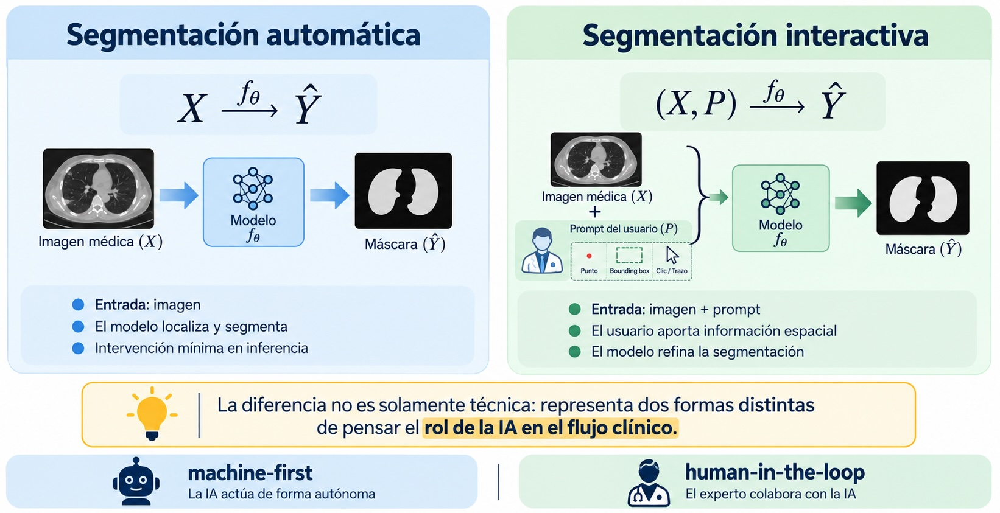
No queremos preguntar solamente:
“¿Cuál tiene mayor Dice?”
La pregunta más importante es:
¿Queremos que el sistema reemplace el proceso de delineación o que colabore con el experto durante ese proceso?
En segmentación automática:
\[ X \xrightarrow{f_\theta} \hat Y \]
el modelo debe resolver por sí mismo:
Un flujo típico puede representarse como:
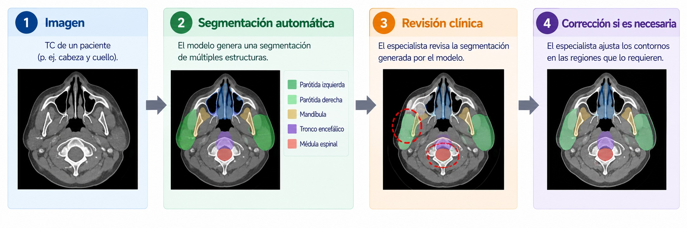
Automático no significa autónomo
Que la máscara inicial sea automática no implica que deba aceptarse sin revisión.
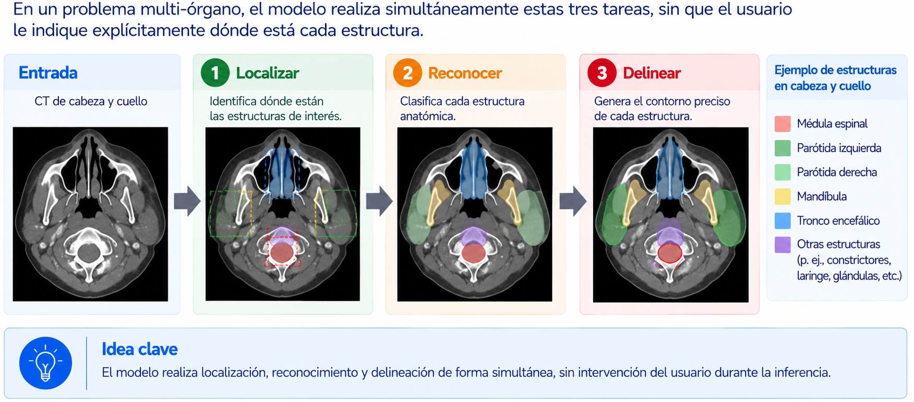
La importancia de nnU-Net no radica principalmente en introducir una arquitectura radicalmente nueva.
Su idea central es:
adaptar automáticamente el pipeline a las propiedades del dataset.
Por eso es más útil pensarlo como:
\[ \boxed{\text{framework auto-configurable}} \]
y no simplemente como una variante arquitectónica.
Dado un nuevo dataset, debemos decidir:
nnU-Net intenta derivar gran parte de estas decisiones a partir de los datos.
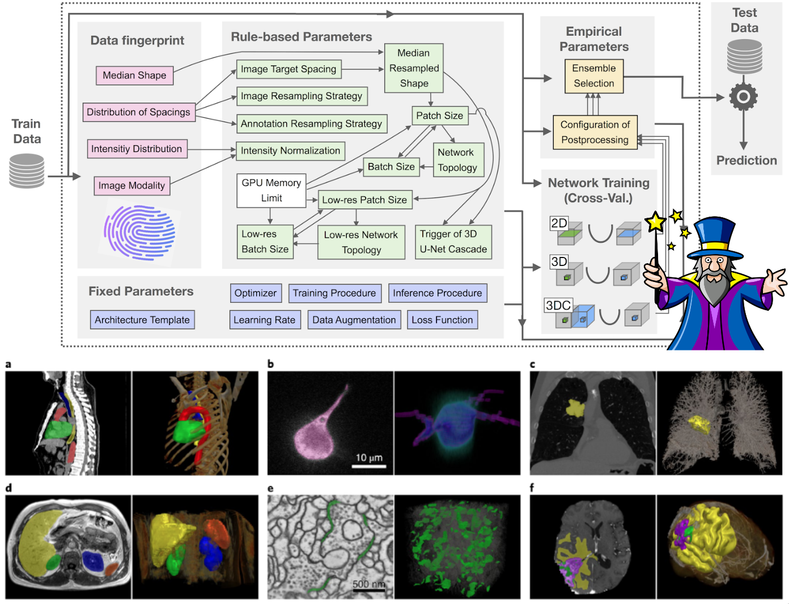
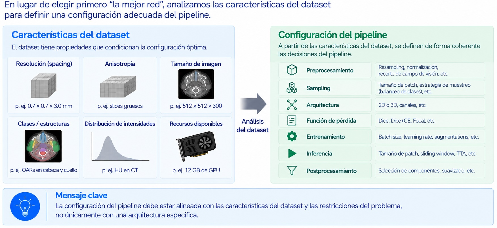
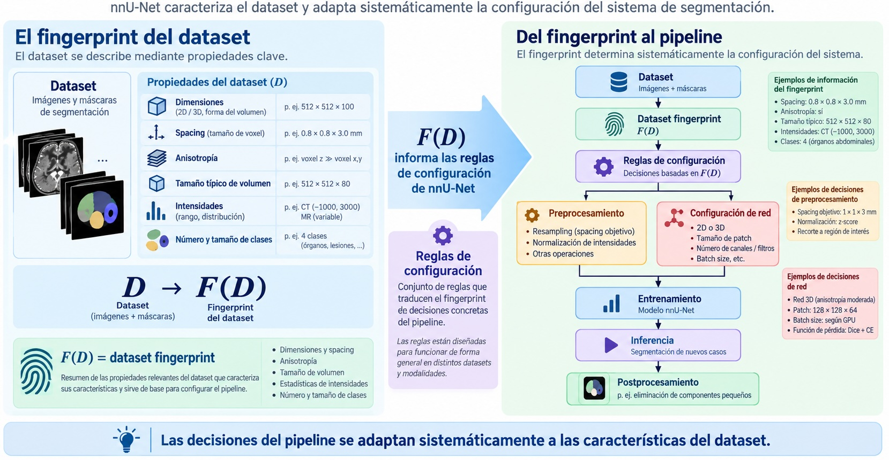
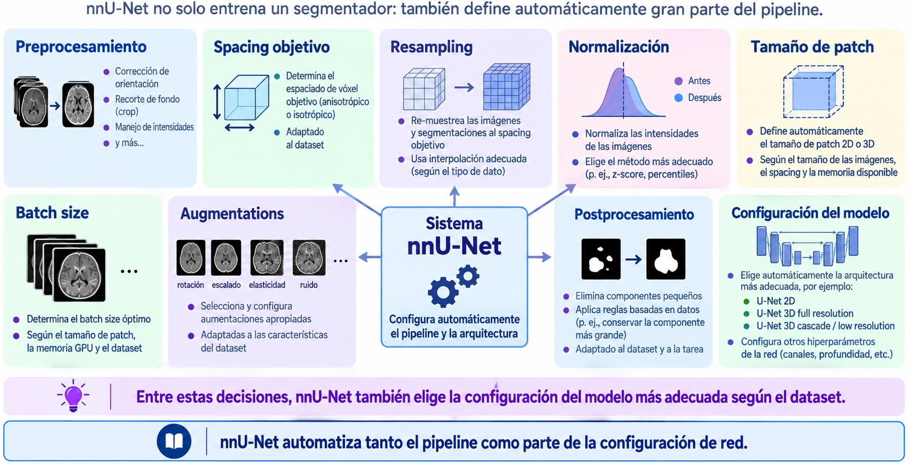
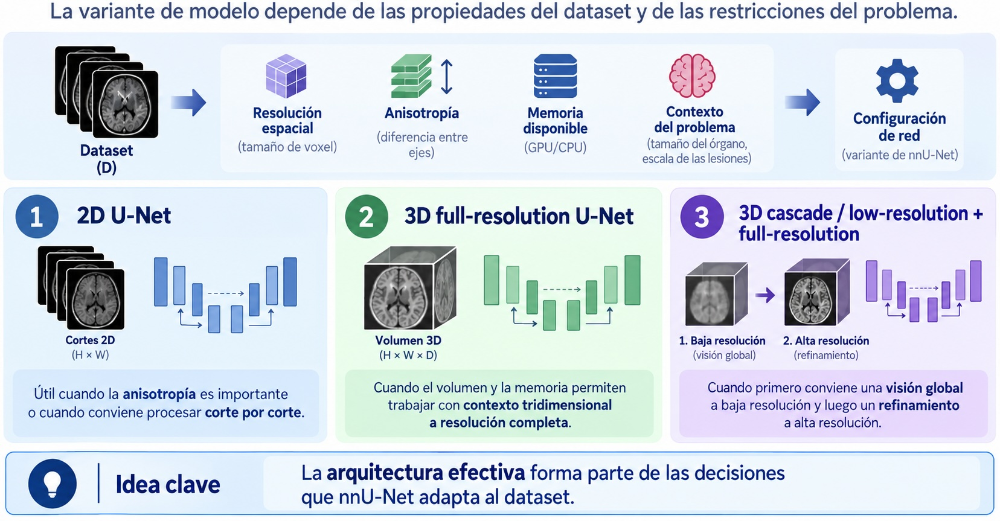
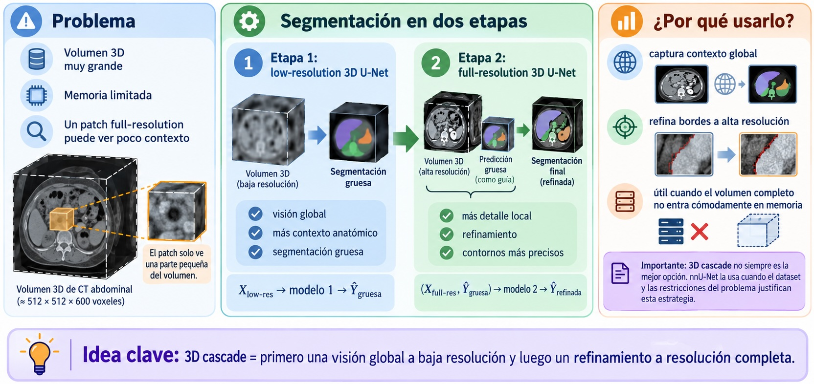
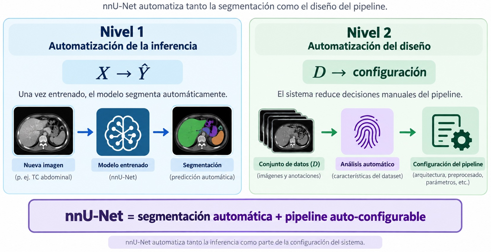
Antes era frecuente comparar:
nueva arquitectura vs. baseline poco optimizado.
Pero entonces aparece una duda:
¿La mejora viene de la arquitectura o del pipeline?
Importante
Una arquitectura novedosa no garantiza por sí sola un mejor sistema.
La configuración del pipeline puede tener un impacto comparable o incluso mayor.
Una decisión central es cuánto contexto volumétrico utilizar.
flowchart LR
D[Dataset] --> R[Resolución + anisotropía]
R --> M[Restricciones de memoria]
M --> C[Configuración 2D / 3D]
La idea importante:
\[ \text{dataset} \rightarrow \text{restricciones} \rightarrow \text{configuración apropiada} \]
En lugar de:
“¿Cuál es la mejor arquitectura?”
pasamos a:
“¿Cuál es la configuración de pipeline más adecuada para este dataset?”
Este cambio desplaza el foco desde el diseño manual de arquitecturas hacia la adaptación sistemática al problema.
Pero el modelo debe resolver todo desde la imagen.
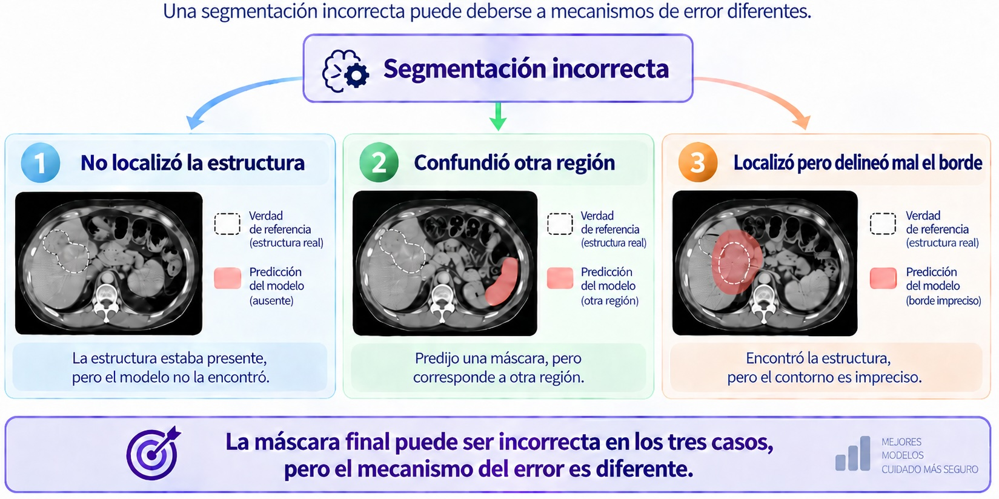
Un modelo automático suele especializarse en:
Por eso:
\[ \text{hospital A} \not\equiv \text{hospital B} \]
Cambios de scanner, reconstrucción, contraste o práctica clínica pueden degradar el desempeño.
Si un modelo fue entrenado para:
\[ \{\text{hígado},\text{riñones},\text{bazo}\} \]
no podemos asumir que segmentará correctamente una estructura nueva.
Nota
La automatización suele ganar escalabilidad, pero a costa de una tarea más cerrada y especializada.
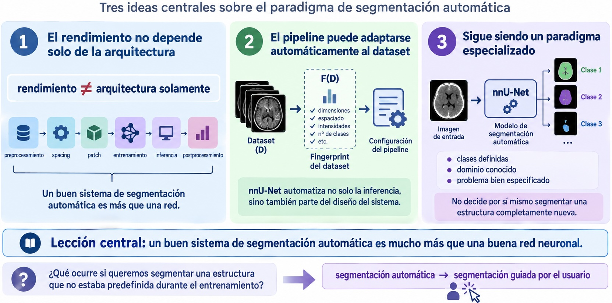